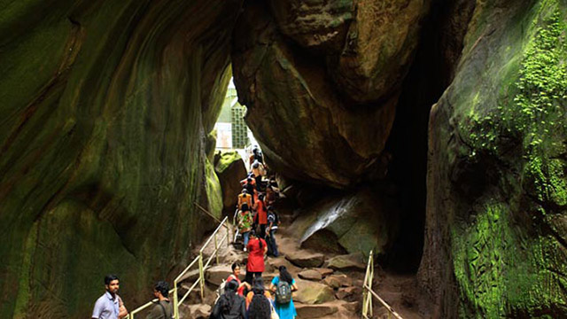

Wayanad
(Est. - 1 Nov 1980)
The name Wayanad is derived from Vayal Nadu which means the land of paddy fields. It is a picturesque plateau situated at a height between 700 meters and 2100 meters above the mean sea level nested among the mountains of the Western Ghats on the Eastern portion of North Kerala and on the sides of Tamil Nadu and Karnataka States.Kalpatta is the district headquarters of Wayanad District.
These are two unique destinations to visit in Wayanad.

Banasura Sagar Dam
